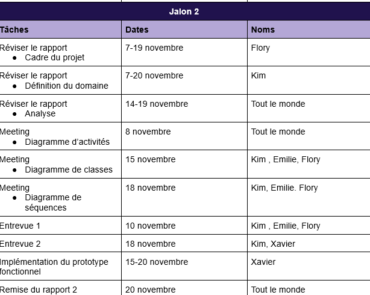
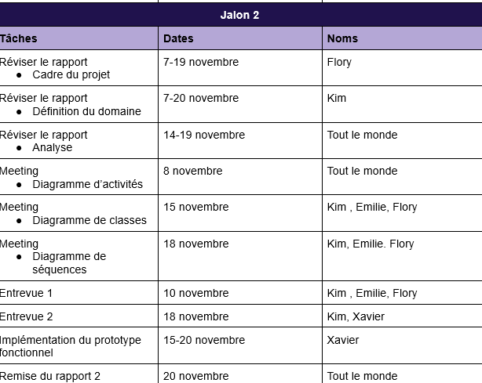
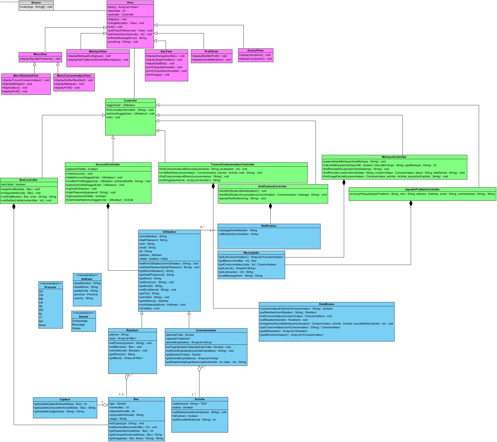
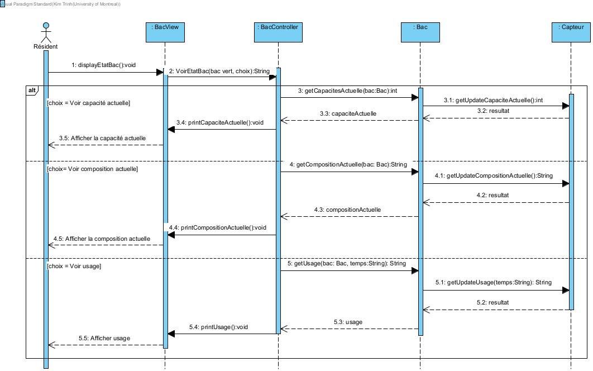
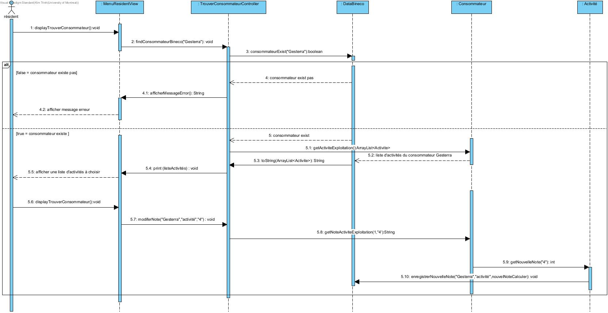

Plannification
La ville de Montréal souhaite encourager le recyclage et le compostage à ses résidents afin de réduire des déchets ménagers. Malheureusement, la motivation collective est atténuée par le manque de données sur le traitement des déchets. Pour y remédier, l’outil Bineco sera mis en place. En supposant que la ville fournira des bacs spécialisés de capteurs aux résidents, l’outil leur permettra de faire le suivi des recyclables et des déchets organiques afin de vérifier l’efficacité des activités de recyclage et compostages. De plus, les consommateurs de déchets organiques et matières recyclables feront partie de la clientèle Bineco. Le résident pourra donc en trouver un qui rejoindra ses intérêts et noter ses activités. Sans oublier que les utilisateurs pourront en tout temps signaler un problème à la ville, l’outil tissera les liens entre les consommateurs de déchets et les résidents.
Contexte : La ville de Montréal souhaite encourager le recyclage et le compostage à ses résidents afin de réduire des déchets ménagers. Pour ce faire, elle met en place des bacs spécialisés qui seront récupérés à des heures fixes.
Problèmes à résoudre : La motivation collective est atténuée par le manque de données sur le traitement des déchets.
 

Priorisation: Description de l'ordre de priorités choisi
- Fonctionnalité essentielle
- Enregistrement des bacs
- Faire le suivi de mes bacs
- S’inscrire en tant que résident ou consommateur
- Afficher les métriques écologiques
- Fonctionnalité nécessaire
- Trouver un consommateur
- Fonctionnalité importante
- Voir l’était de traitement des déchets municipaux
- Amélioration majeure
- Supprimer un bac
- Amélioration mineure
- Signaler un problème
Question:
- Quelles sont les spécifications à afficher dans :
- "Afficher l'état de mes bacs" (ex: type d'états),
- "Afficher les métriques de l'activité écologique" (ex: indicateurs bons et mauvais des activités, situation de tris)
- "Voir l'état de traitement de mes déchets" (ex: lieux de livraison de déchets, déchets traités et/ou non traités, historique du recyclage) ?
- >Ces détails seront ajoutés à l'énoncé cette fin de semaine
- De quelles manières un résident peut signaler un problème à la ville( Via un forum public ou message privée ,i-e, via service clientèle).
- L'utilisateur choisit une option t.q. bacs endommagés (à réparer ou remplacer), demande d'un bac, bac insuffisant (capacité) qui envoie une requête à la ville
- de quelles manière localiser un consommateur ( adresse , nom de compte, résaux sociaux et autres.)
- Souhaiteriez-vous mettre un message de sensibilisation à l’ouverture ?
- De quelles manières un résident peut-il communiquer avec la ville ? (forum, appel téléphonique, email, message privé etc)?
- Comment pouvons-nous nous assurer qu’un consommateur a été enregistré auprès de la ville (prérequis)?
- Quels mécanismes de recherche voulez-vous utiliser pour trouver un consommateur?
- Si les consommateurs ont autre activités que celle précité, peuvent-il s'inscrire aux consommateurs ? (activités d’exploitation)
- Le projet pourra-t-il être open source ?
- Doit-on mettre post/préconditions dans les scénarios?
- La page “ voir les activités que je maintiens” concernent les résidents et les consommateurs ?
- Avez-vous une liste d’activités que vous voulez absolument être présentes dans Bineco?
- Concernant le prototype fonctionnel, voulez-vous que toutes les fonctionnalités des CUs du résident soient testables. De quelle manière ?
- Il semblerait que l’outil Bineco devrait notifier les résidents d'un besoin de plastique (notification d'accumulation) . Pouvez-vous nous donner des exemples? Est-ce lorsque le résident ne recycle pas assez?
- Un résident peut noter un consommateur. Cela se fera-t-il d’une manière anonyme? Est-ce qu’un consommateur peut répondre à sa note?
- À quelle fréquence voulez-vous notifier le résident pour les sensibiliser au traitement de certains déchets?
- Vous avez dit tout à l’heure que municipInfo vérifie chaque bac. Donc lorsqu’un résident enregistre un nouveau bac, qu’arrive-t-il?
- Un bac contient plusieurs données. À quelle fréquence doivent-ils être mise à jour?
Jalon 1
- Bineco doit permettre à un résident de naviguer à travers la liste des consommateurs enregistrés en offrant certains filtres pertinents pour la localisation de consommateur spécifique
- Dans un premier temps, non, car le client veut prioriser la porté pratique plutôt que social. Lorsque l’outil sera plus répandu (il aura plus d’utilisateurs), ce serait une bonne idée.
- Ce serait par une requête par API à la ville. Il est à noter que “signaler un problème à la ville” concerne surtout les besoins immédiats tel que réparer un bac ou signaler un consommateur.
- Normalement par API.
- Si nous avons une longue liste de consommateurs, il serait préférable de pouvoir les filtrer. Par exemple, nous aurions la possibilité de filtrer les consommateurs par secteurs d’activités, par régions* ou efficacité des traitements.
*Car les déchets d’un résident de Montréal peut être amenés ailleurs afin d’être traités.
- Oui le consommateur peut avoir plusieurs activités autres que celles précitées.
- Ça dépend des développeurs du projet ( si les développeurs ont l’idée que ca pourrait améliorer le comportement du produit final
- Non, ce n’est pas tout le temps nécéssaire donc optionnel.
- C’est un souhait(pas une page). Les consommateurs indiquent les proportions de chacun de leurs activités et le résident peut les consulter.
Jalon 2
-
Oui les activités des consommateurs( activités de recyclage, activités liés au déchets organiques, activités de compostages) que les résidents pourront consulter. Des tags pourraient être utiles pour catégoriser les activités.
-
Les clients doivent être capable d'exécuter le code JAVA ,i-e, ouvrir le menu, pouvoir faire certaines manipulations tels que: afficher les métriques et les explorer, rechercher les consommateurs, etc…
-
Exemple: Les bacs ont besoin d’une certaine quantité d’engrais qui sont constitués d’éléments qui pourraient favoriser le développement des bacs. Le consommateur pour notifier le résident d’un message disant "Prêtez attention à tels produits dans les jours à venir “ afin d’atteindre les résidents.
-
Non , le consommateur n’a pas besoin de répondre. Il n’a pas d’anonymat. Il faut que le résident ait la capacité de pouvoir remplir son formulaire et donc qu’il fait simplement la possibilité.
-
Il n’y a pas de fréquence à envisager.
-
Le code du bac et l'adresse du résident sont envoyés. Avec ces éléments, on arrive à valider si le bac est géré par la ville et si il est vraiment associé à l'adresse fournie. La validation se fait dans l’application BINECO.
-
Pas à chaque semaine, chaque jour idéalement. Les données peuvent être mise à jour à chaque fois que l’utilisateur souhaite voir l’état de son bac.
Compréhension du domaine
Après de nombreuses rencontres et une familiarisation avec l'activité VaxTodo, nous avons préparé un glossaire rassemblant les termes et expressions clés caractérisant l'environnement.
Glossaire
- Outils bineco
- application permettant une meilleure communication des activités de recyclage et compostage résultant du travail de tri effectué dans les foyers, et des métriques accessibles à tous la distance entre les acteurs. Les données sur les consommateurs, résidents, les activités et les bacs seront utilisé à des fins purement statistiques: calculer les métriques au niveau municipal et résidentiel.
- Résidants
- utilisateurs dans l’application Bineco qui ont en minimum un bac et en maximum trois bacs en leur possession (condition requise pour créer un compte). Ils auront la possibilité de faire divers actions avec leurs bacs telles que le supprimer ou l’enregistrer et voir son état. Trouver un consommateur, voir les activités qu’ils maintiennent et voir les métriques au niveau municipal/résident sont d’autres options accessibles à ces derniers.
- Consommateurs
- toute entreprise, organisme, groupe ou individu faisant le traitement des déchets ou les utilisant dans leurs activités. Il est une entité exploitant les déchets et un utilisateur de Bineco.Pour se créer un code, un consommateur doit avoir reçu un code de la ville. Ces derniers pourront ainsi notifier les résidents pour un besoin de déchets et avoir un aperçu des métriques au niveau municipal. En ayant un compte dans l’outil, les résidents peuvent les trouver et noter leurs activités.
- MunicipInfo (ex: Ville de Montréal)
- le système administratif municipal traitant les déchets. Elle fournit tout le matériel nécessaire (poubelles, capteurs, données de suivi). Les utilisateurs peuvent signaler leur problème (comme demander un nouveau bac) à MunicipInfo via Bineco.
- Poubelles
- bacs de compostage, bac de recyclage, bacs d’ordure
- Capteurs
- les capteurs communiquent directement avec le système pour envoyer les données du contenu des bacs (citer du feedback). Ses données seront disponibles aux résidents qui veulent connaître la capacité/composition actuelle et l’usage de leurs bacs au fil du temps. Elles vont aider à calculer les métriques nécessaires disponibles à tous les utilisateurs.
- Activités
- compostage, recyclage, ordures
- Profil du résident
- nom, prénom, adresse courriel, téléphone, adresse, numéro d’un bac
- Profil du consommateur
- nom, adresse, email, téléphone,type de déchets traités, capacité de traitement, activités d'exploitation
- Code QR
- identificateur de bac.
- Métriques
- indicateurs écologiques révélant la tendance qu’ont les résidents à recycler, jeter leur déchet et composter.
- Faire le suivi des services
- s'assurer du processus de traitement des déchets( bacs de compostage, bac de recyclage, bacs d’ordure) et voir les activités auxquelles participent les résidents.
- Activités
- compostage, recyclage, ordures.
- Inscription à l’outil “Bineco”
- inscription d’un résident qui pourra enregistrer ses bacs ou d’un consommateur pour augmenter sa visibilité.
- Signaler un problème :
- Communiquer avec la ville.
Entités:
Besoins techniques:
Actions:
Modélisation du domaine

Scénarios
Scénario principal
- Le système affiche le choix d’aller vers la page de connection ou d’inscription.
- L’utilisateur choisit l’option voulu.
- Le système valide et amène l’utilisateur vers la page voulue.
Scénario principal
- L’utilisateur précise s’il veut s'inscrire en tant que consommateur ou résident.
- L’outil lui demande de fournir ses informations tels que son nom d’utilisateur, son mot de passe, et d’autres renseignements qui permetteront de l’identifier.
Si c’est un consommateur,- *Profil: nom, adresse, email, téléphone
- *le type de déchets traités
- *Capacité de traitement
- *Activités d'exploitation
- *Profil: nom, prénom, adresse courriel, téléphone
- *Adresse de la résidence
- *Bac(s) -> (max 3 bac, min 1 bac)
- L’utilisateur remplit les champs requis et soumet ses informations.
- Le système envoie les informations à la ville afin de valider l’utilisateur et attends la réponse de la MunicipInfo.
- La MunicipInfo confirme la validité de l’utilisateur.
- Le système enregistre les informations temporairement.
- Le système dit: “Veuillez confirmer votre inscription en cliquant sur le lien dans le courriel de confirmation envoyé par MunicipInfo dans le mailbox de l’adresse email fourni.”
- Le système valide son inscription dès que l’utilisateur clique sur le lien et enregistre ses informations de façon permanente.
- L’utilisateur choisit de quitter l’outil ou d’aller vers la page de connexion.
Scénarios alternatifs
- 7 A. L’utilisateur oublie de cliquer sur le lien de confirmation
- B. Il ne peut pas accéder à l’outil Bineco, autres que la page d’acceuil.
- 5 A. L’utilisateur n’est pas éligible (ex: adresse, numéro de bac ou informations de consommateurs erronées).
- B. Système dit: “Le champ __ n’est pas valide.”
- C. Le scénario reprend à l’étape 2, car l’inscription est automatiquement annulé lorsque les informations de sont pas validées par MunicipInfo.
- 8A. Le lien de confirmation a été échu après 3 jours, le système supprime les informations qu’il avait gardé sur cet utilisateur.
Scénario principal
- Le système donne l’option de se connecter en tant que un résident ou un consommateur.
- L’utilisateur choisit l’option voulu.
- Le système valide et lui donne l’option de soit fournir nom d’utilisateur et mot de passe (1) ou passer une requête pour modifier son mot de passe (2).
- L’utilisateur choisit l’option 1.
- a. L’outil lui demande de fournir son nom d’utilisateur et mot de passe.
- b. L’utilisateur remplit les champs requis et soumet ses informations.
- c. L’outil valide les informations.
- d. Le résident/consommateur accède à son menu respectif.
- L’utilisateur choisit l’option 2.
- a. L’outil lui demande son adresse de courriel.
- b. L’utilisateur le fournit et soumet son email.
- c. L’outil valide et envoie un lien de confirmation de changement de mot de passe à l’utilisateur.
Scénarios alternatifs
- 4c. A. Le résident/consommateur entre des informations de connexion erronées. Le mot de passe est erroné ou le nom d’utilisateur est non-existant.
- B. Système dit: “Le nom d’utilisateur ou le mot de passe est erroné” et donne l’option de
- 1. Retourner à l’étape 3
- 2. Retour à la page d’accueil
- a. Le scénario se termine
- 5c. A. L’adresse de courriel fourni n’est associé à aucun utilisateur de Bineco.
- B. Système dit: “L’addresse de courriel n’est pas valide.” et donne l’option de
- 1. Reprendre à l’étape 5a
- 2. Quitter
Scénario principal
- Le système demande au résident de fournir le numéro du bacs et de l’identifie par un nom ou un type.
- Le résident scanne le code QR ou rentre manuellement le numéro de son bac, remplit les champs nécessaires et soumet ses informations.
- Le système valide que le code QR ou numéro de bac fourni n’est pas déjà associé au résident.
- Le système envoie les code QR ou le numéro du bac à MunicipInfo afin de le valider et attend la réponse de MunicipInfo.
- MunicipInfo confirme la validité du bacs.
- L’outil enregistre les informations.
- Le résident peut
- a. Enregistrer un nouveau bac
- i. Le scénario reprend à l’étape 1.
- b. Revenir au menu résident
Scénarios alternatifs
- 3. A. Le code qr ou numéro de bac n’est pas éligible
- B. Le système dit: “Le bac n’est pas valide”.
- C. Le scénario reprend à l’étape 1.
- 3. A. Le bac a déjà été enregistré, car le système a trouvé le même code QR ou numéro de bac associé au résident.
- B. Le système affiche le message: “Le bac a déjà été enregistré.”
- C. Le scénario se reprend soit l’étape 1 ou le résident peut quitter.
Scénario principal
- Le système affiche tous les bacs enregistrés du résident.
- Le résident sélectionne le bac voulu parmi tous ses bacs enregistrés.
- Le système valide le choix, récolte les information du capteur et affiche les options
- (1). Voir la capacité actuelle du [nomDuBac]
- (2). Voir la composition actuelle du [nomDuBbac]
- (3). Voir l’usage du [nomDuBac]
- Le résident sélectionne le choix voulu.
- Le système valide et affiche le contenu du choix sélectionné. Si le résident a choisit l’option de voir
- a. Capacité actuelle
- i. L’outil affiche le niveau de remplissage.
- b. Composition actuelle
- i. L’outil affiche le contenu du bac.
- c. Son usage
- i. Le système lui donne l’option de choisir un intervalle de son historique à afficher
- ii. L’utilisateur choisit l’intervalle voulu.
- iii. Le système valide et affiche le contenu du choix sélectionné.
Scénarios alternatifs
- 2. A. Le bac à afficher ne se trouve pas dans les choix à sélectionner dans l’outil.
- B. L’outil offre la possibilité de
- - Aller à la page “Signaler un problème à la ville”
- - Aller à la page “Enregistrer mes bacs”
Scénario principal
- Le système donne l’option de choisir soit les métriques de la ville ou de l’utilisateur.
- L’utilisateur choisit l’option voulu.
- Le système valide son choix et lui donne l’option de choisir un intervalle de temps et de paramétriser les métriques.
- L’outil affiche les métriques.
Scénarios alternatifs
- 4. A. Aucune métrique affichée dans l’intervalle de temps choisi
- B. Donne l’option de retourner à l'étape 3
Scénario principal
- Le système donne différents choix:
- a. Récupération des déchets (passage des camions)
- b. Livraison des déchets (date, consommateur ou dépôt, état des déchets)
- c. Usage des déchets (consommateur, activité, proportions exploitées)
- L'utilisateur choisit l’option voulu.
- Le système valide et affiche l’option choisi. Si l'utilisateur a choisi
- a. Récupération des déchets:
- i. Le système lui donne un choix d’intervalle de temps.
- ii. l'utilisateur choisi l’intervalle de temps voulu.
- iii. Le système valide et affiche l’option choisi.
- b. Livraison des déchets
- i. Le système donne l’option de voir soit (1) la date de livraison d’un consommateur particulier soit (2) vérifier les déchets ont été éliminés, si oui, où ont-il été déposé
- ii. L’utilisateur choisit l’option voulu.
- iii. Le système valide et affiche l’option choisi.
- 1. la date de livraison d’un consommateur particulier
- a. Le système laisse l’utilisateur la date et le consommateur voulu.
- b. L’utilisateur choisit la date et le consommateur voulus.
- c. Le système affirme ou non s’il aura une livraison de déchet à ce jour-là par ce consommateur-là
- 2. vérifier les déchets ont été éliminés, si oui, où ont-il été déposé.
- a. Le système laisse l’utilisateur choisir une date.
- b. L’utilisateur choisit la date voulu.
- c. Le système affiche l’état de traitements des déchets de la période choisi.
- c. Usage des déchets
- i. Le système laisse le choix de filtrer sur le consommateur, l’activité et les proportions exploités.
- ii. L’utilisateur choisit les options voulus.
- iii. Le système valide et affiche le contenu du choix sélectionné.
Scénario principal
- Le système énumère des choix de problèmes tel que demander un nouveau bac.
- L’utilisateur le type de problème voulu.
- Le système lui demande de fournir son nom, adresse, courriel et ses commentaires.
- L’utilisateur remplit les informations et les soumet.
- L’outil envoie sa requête à MunicpInfo et dit: “Le problème a été signalé et MunipInfo vous contactera sous peu.”.
Scénarios alternatifs
- 5 A. Le problème n’a pas pu été signalé à MunicipInfo, car leur serveur est en panne.
- B. Le système dit: “MunicipInfo ne peut traiter votre demande pour le moment, veuillez réessayer plus tard.”.
- C. Le scénario se termine
Scénario principal
- Le système offre l’option de trouver un consommateur enregistré dans Bineco par un filtre de localisation et un mécanisme de recherche tel que le type de déchets traités (ordure, compostage, recyclage), la capacité de traitement et l’activités d’exploitation (“élimination des déchets par incinérateur, chambre à combustion ou site d'enfouissement” ).
- Le résident choisit le type de consommateurs voulu à l’aide du filtre et mécanisme de recherche.
- Le système valide et affiche les consommateurs qui répondent aux critères du résident.
Scénarios alternatifs
- 3. A. Aucun consommateur ne correspond aux contraintes (filtre) de l’utilisateur
- B. Le système dit: “Aucun consommateur trouvé.”..
- C. Retourner à l'étape 2.
Scénario principal
- Le système liste les bacs que le résident a enregistré.
- Le résident sélectionne le bac qu’il veut supprimer.
- Le système valide le choix et affiche un message: “Le bac __ a été supprimé”.
Scénarios alternatifs
- 2. A. Le résident souhaite supprimé plus d’un bac.
- B. Le scénario reprend à l’étape 1.
- 2. A. Le résident veut supprimer l’unique et dernier bac enregistré associé à son compte.
- B. Le système dit: “Il est obligatoire d’avoir au moins un bac associé à votre compte pour utiliser Bineco. Si vous souhaitez vous désinscrire, veuillez-vous diriger vers la page Modification du profil.”
- C. Le scénario se termine.
Scénario principal
- Le système affiche (1) les détails du profil de l’utilisateur et donne également l’option de (2) se désinscrire.
- L'utilisateur
- a. modifie les champs d’informations personnels incluant son mot de passe et les types de métriques et le nombre de notification à afficher sur son page principale s et soumet les nouveaux informations
- b. confirme vouloir se désinscrire.
- Si l’utilisateur choisi de
- a. Modifier ses informations
- i. Le système enregistre les nouvelles informations.
- b. Se désinscrire
- i. Le système dit: “Cette action est irréversible. Souhaitez-vous continuer tout de même?” Le système donne le choix de confirmer ou refuser.
- ii. L’utilisateur
- A. Confirme son choix.
- 1. Le système supprime son compte
- B. Refuse de continuer
- 1. Le scénario reprend à l’étape 1.
Scénarios alternatifs
- 3.b.ii.A.1 A. ’utilisateur a, sans faire exprès, choisi de confirmer son choix alors qu’il ne le voulait pas.
- B. L'utilisateur doit s’inscrire de nouveau.
Scénario principal
- Le système liste
- a. Si c’est un consommateur, les pages
- i. États de traitement de déchets municipaux
- ii. Métriques écologique
- iii. Notifier les résidents
- iv. Signaler un problème à la ville
- v. Modifier son profil
- b. Si c’est un résident
- i. Un métrique niveau résidentiel (qui changera à chaque jour) et un autre municipale (qui changera à chaque semaine).
- ii. La liste de notifications par un consommateur ou Bineco.
- iii. les pages
- 1. Modifier son profil
- 2. Supprimer son bac
- 3. Enregistrer un bac
- 4. Trouver un consommateur et noter son activité
- 5. Signaler un problème à la ville
- 6. État de mes bacs
- 7. Métriques écologiques
- 8. États de traitements des déchets municipaux
- L’utilisateur sélectionne la page voulu. Si c’est un résident qui clique sur un notification
- a. Le système fait disparaître la notification.
- Le système confirme et affiche la page voulue.
Scénarios alternatifs
- 1.b.i. A. Le résident veut voir d’autres métriques et changer la fréquence de modification d’un métrique
- B. Il peut se diriger vers la page Modification du profil
- 1.b.ii. A. Le résident souhaite changer le nombre de notifications afficher.
- B. Il peut se diriger vers la page Modification du profil
Scénario principal
- Le système affiche une barre de recherche pour trouver un consommateur (voir CU trouver un consommateur).
- Le résident écrit le nom du consommateur et le soumet.
- Le système valide et affiche les divers activités ainsi que leur note général que le résident peut noter.
- Le résident en choisit un.
- Le système valide, affiche et permet au résident de noter un consommateur d’une note entre 1 et 5 (5 étant très bien).
- Le résident note l’activité.
- Le système valide et calcule la nouvelle note générale de l’activité.
Scénarios alternatifs
- 2. A. Le nom du consommateur ne se trouve pas parmi la liste des consommateurs enregistrés dans Bineco.
- B. Le système dit: “Aucun consommateur trouvé.”
- C. Le scénario reprend à l’étape 1.
- 3. A. Une activité n’a jamais encore été notée.
- B. Le système marquera la note comme étant N/A.
Scénario principal
- Le système,
- a. Pour un message de sensibilisation
- 1. Le système, à chaque lundi, sélectionne un message de sensibilisation que les résidents n’ont pas encore reçu. Il l’envoie à chaque résident.
- 2. Les résidents voient afficher sur leur page principal le message de la semaine.
- a. Pour une notification d’accumulation de la part d’un consommateur
- 1. Le consommateur accède à la page “Notifier les résidents”.
- 2. Le système présente les champs à rempulr: titre et description du message.
- 3. Le consommateur rempult les champs requis et soumet sa requête.
- 4. Le système envoie ce message à tous les résidents comme priorité.
- 5. Le résident voit dans la page principal le message.
Modélisation de la structure
Modélisation du comportement
Afficher l'état du bac de recyclage
Trouver un consommateur et noter son activité
Demander un nouveau bac à MunicipInfo
Notifier les résidents d'un besoin de plastique
Justification des choix du design: Abstraction, Couplage et cohésion, Encapsulation
Diagramme de classe
Pour notre diagramme de classe, nous avons décidé de suivre le style d'architecture MVC. La classe "View" et ses enfants s'occupent d'afficher les informations du modèle (c'est-à-dire les classes entitées: Utilisateur et ses enfants, Notification, Bac et Activite) par la classe Controller.
Pour simuler les API nécessaires, la classe MunicipInfo et Capteur ont été utilisées.
La classe DataBineco store les informations des utilisateurs de l'outil tels que les consommateurs et les résidents ainsi que les objets qui leur sont reliés (bac ou activité). Si nous avons eu le temps, il aurait été génial d'utiliser une base de donnée mySQL afin d'explorer de nouvelles technologies.
Bref, cette division en MVC, nous a permis de mieux coupler les classes et assurer une bonne cohésion entre eux.
Vue: la classe View et ses enfants
View s'occupe d'afficher tous les pages nécessaires à l'outil. En premier, il affiche la page d'Accueil (AccueilView). Il listera, par la suite, l'option de s'inscrire ou se connecter. Une fois que l'utilisateur aura fait son choix le Controller entrera en jeu. Si tout est valide, alors MenuView pourra afficher le menu correspondant à un consommateur ou utilisateur. De là, il pourra accéder à des "pages" plus spécifique telles que "Voir les métriques écologique" par MetriqueView ou "Voir l'état de son bac" par BacView. Le View ira chercher les donnnees par le Controller. Il affichera, par la suite, les informations reçus.
View est une classe abstraite. Elle n'a pas besoin d'être instancié: elle contient seulement les méthodes utilent à tous les vues comme exit (quitter l'outil en ligne de commande par status 0).
Controller: la classe Controller et ses enfants
Pour faire le pont entre la vue et les data/entités, ce sera le rôle du Controller. Pour tout ce qui relié aux comptes des utilisateurs (connection, inscription, modifier le profil), si c'est un login, par exemple, AccountController vérifiera si l'utilisateur existe dans la base de donnée de Bineco et s'assurera que le nom d'utilisateur corresponde bien au mot de passe (passwordValide(utilisateur)). La logique du code (qu'est-ce qui fait en sorte qu'un utilisateur est valide, comment calculer les métriques, à quelle fréquence faut-il envoyer un message de notification de sensibilisation et autres) se retrouve ainsi dans le Controller et ses enfants. Il va aller chercher les informations dans les entités, s'occupera de gérer les erreurs et dira au View ce qui devrait être afficher suite aux requêtes de l'utilisateur.
Modèle: la classe Utilisateur et ses enfant, Activite, Bac, Notification, DataBineco
Modèle emmagasine les informations de l'outil. Par exemple, il store tous les messages de notifications à envoyer aux résidents, les bacs reliés à un résident et les activités reliés à un consommateur. Ses données sont mis dans DataBineco, une classe servant de base de donnee (simplifié).
Prototype
Au niveau de l'abstraction, notre classe abstraite 'Page' est la principale abstraction du programme. La majorité de nos classes 'extend' de cette 'Page' et sont donc "implémenteurs" de cette derniere. L'usage de setters et de getters sont utilisés le plus possible, par contre pour la partie "harcodé" dans nos classes jouant le rôle de bases de données/API nous nous sommes contentés a plusieurs reprises d'une encapsulation plus faible. Puisque ces classes et données sont fictives, lorsque nous aurons accès aux vrais données et API, un travail sera fait pour bien encapsulé.
Analyse
Notre analyse préliminaire nous a permis d'élucider les besoins et risques suivants
Modèle dynamique
Bacs: Enregistrer mes bacs , afficher l'état et supprimer .

Page principale du résident: Trouver un consommateur et signaler un problème.

Métriques: état de traitement des déchets et activité écologique

Page d'acceuil : connexion

Profil : modification du profil du résident

Risques
- L’état n’est pas à jour :
Le bon-fonctionnement de l’application dépend des API et des sites webs de la ville. Panne ou trafic sur un site peuvent entraver le fonctionnement de notre application.
- Informations erronées:
La validité et la mise à jour des données affichée dans l’application dépend du consommateur (fréquence d’affichage des données, ect…). De plus, les métriques en lien avec nos propres bacs dépendent aussi du bon fonctionnement des capteurs.
- Endommagement du bac/scan du bac :
Si le bac s’endommage et qu'il est impossible de le scanner lors de la récolte, le contenu de nos bacs ne paraîtrait pas et donc, il serait impossible de faire le suivi.
- Impossible de trouver un consommateur :
Le resident est incapable de trouver le consommateur qui lui convient car ce dernier n’est pas enregistré auprès de la ville ou dans son filtre de recherche rien ne s’affiche.
- Compréhension des données montrées complexe :
Les informations que l’outil présente (métriques écologiques, proportions) au niveau résidentiel ou municipal ne sont pas nécessairement les plus simples à comprendre. Elles dépendent beaucoup du contexte.
- Loi sur l’exploitation des données au Québec :
Afin de conserver sa vie privée dans l’ère numérique, Québec a mis en place la loi 25 qui offre aux utilisateurs le droit à la transparence (savoir concrètement comment et pourquoi les données sont exploités), au consentement, à la portabilité (obtenir tous les données recueillies par la compagnie à propos de l’utilisateur en question) et à l’effacement (possibilité de réclamer l’arrêt de collecte de données sur son compte) . Enfreindre cette loi peut amener à une amende allant jusqu’à 25 M $. S’assurer que de mettre des termes et conditions d’utilisation bien clair et précis et d’obtenir le consentement de l’utilisateur est ainsi très important. Source 1, Source 2
- Temps alloué pour réaliser le projet: :
Avoir un deadline raisonnable permet de bâtir proprement Bineco pour répondre aux besoins fonctionnels, notamment en s’assurant de bien passer les tests qui vérifient et valident sa qualité.
Exigences non-fonctionnelles
- Sécurité (Base de donnée encrypter)
- Performance (Temps de réponse rapide avec l’api < 0.1 seconde):
- Option de revenir au menu ou quitter à tout moment
- Maintenir l’app avec des mise à jour
- Visibilité, facile à lire, contenu pas condensé
- Portabilité (Pouvoir être utilisé par divers villes):
- Utilisabilité (Rendre accessible Bineco à divers utilisateurs):
- Fiabilité (Taux de fonctionnement 99,99%):
- Depuis la mise en place de la loi 25 (expliquée plus loin dans la section Analyse, risque), protéger les informations personnelles du client est devenu une obligation. Les utilisateurs se sentiraient plus assurés d’utiliser un outil qui respecte leurs données privées. De plus, comme le numéro de téléphone et l’adresse sont emmagasinés dans la base de données de Bineco, les résidents et consommateurs courent le risque de se faire exposer par des hackers mal intentionnés (ex: scammer).
- Comme Bineco à recours aux API de MunicipInfo et aux capteurs pour afficher la plupart de ses données, minimiser la latence de l’application permet de promouvoir des données précises pour les utilisateurs.
- Application en ligne de commande plus difficile à naviguer, donc avoir les options de revenir au menu et quitter à tout moment.
- Améliorer l’expérience en ayant du feedback du client.
- Améliorer la structure des pages. Pas d’information inutile affichée. Liste des options clairement énoncées.
- Bineco a comme objectif de pousser la collectivité à réduire leur déchets ménagers. Bien construit, l’outil peut bénéficier à plusieurs villes qui veulent encourager leur citoyen à recycler et composter en étant le pont entre les résidents et les consommateurs de déchets.
- Il existe une grande variété d’utilisateurs avec des besoins différents. Comme une application en ligne de commande peut être plus difficile à naviguer, avoir les options de revenir au menu et quitter à tout moment permet une meilleure utilisation des services offerts. Améliorer la structure des pages, pas d’information inutile affichée et une liste des options clairement énoncées permettent de ne pas encombrer la lecture des données. Sans oublier, maintenir l’app avec des mises à jour en ayant du feedback du client améliore l’expérience.
- Les utilisateurs sont nombreux. Ils produisent des déchets à divers moments et accèdent à différents laps de temps à Bineco. Avoir un outil qui tombe en panne souvent nuirait à l’expérience de l’utilisateur et entraverait la mise à jour des états de déchets des résidents (un but premier de Bineco).
Ressources nécessaires
Besoins matériels:-
Matériel nécessaire :
: Appareil, capteur, bacs.
- L’ordinateur/téléphone intelligent permet à l’utilisateur de télécharger Bineco . Les capteurs servent à mettre à jour les données des bacs. Les bacs sont nécessaires à Bineco afin de calculer des métriques et aux résidents pour se créer un compte.
: API, User Interface, Queries a base de données.
- Comme Bineco doit chercher des données dans MunicipInfo et auprès des capteurs, il doit nécessairement utiliser un API et également des Queries. Un User interface facilitera la navigation et l’utilisation de Bineco.
: Base de donnée.
- Bineco utilisera une base de données comme mySQL qui enregistre toutes les informations sur les consommateurs (et leurs activités correspondant), les résidents (et leurs bacs correspondants). L’outil pourra alors plus facilement modifier, créer ou supprimer ses données.
Contraintes
Contraintes physiques- La capacité de stockage: L’utilisateur doit avoir suffisamment d’espace pour installer l’application BINECO. Les données relatives à l’application doivent avoir de l’espace pour être stockées de manière à faciliter le bon fonctionnement de l’outil BINECO.
- Connection internet (suivi, métriques):L’utilisateur doit avoir une connexion internet pour pouvoir consulter ses métriques et faire le suivi de ses bacs.
- Caméra pour scanner: L’utilisateur doit être muni d’une caméra afin de scanner le code de son bac et procéder à l’enregistrement de ce dernier sur l’outil BINECOc
- Base de données encryptée (utilisateur, mot de passe): crypter la base de données assure une sécurisation de son contenu contre tout accès non autorisé. Ainsi, les informations entrées ( mot de passe, adresse, etc…)par l’utilisateur de BINECO sont protégées de toutes utilisations mal intentionnées .
- API: Avoir un API permet d’ avoir accès aux données de la ville et des consommateurs . Ainsi, ca facilite l’accès aux métriques du coté des résidents le suivi des bacs. exemple: la ville donne les lots des déchets,contient la liste de bac valide et de consommateurs valides
- Utilisation de langage de programmation orienté objet: Un langage tel que Java facilite l’encapsulation et la structure du code.
Propositions
Choix des métriques:Niveau résidentiel (usage des bacs):
- Interprétation du poids relatif de chaque activité (kg) dans un intervalle de temps défini (ex:semaines, mois, année).
- Exemple: Poids de recyclage = 5 kg; Poids de compostage = 10 kg; Poids de recyclage / poids de compostage = 5 / 10 = ½ -> on a deux fois moins recycler que composter.
- Pourcentage de chaque activité (compostage, recyclage, ordures) par rapport à une autre selon l’intervalle de temps défini complémenté par les préférences du résident pour plus de personnalisation.
Niveau municipal (traitement des déchets):
- Proportion de chaque activité (compostage, recyclage, ordures) par rapport à la ville.
- Pourcentage de déchets envoyés dans le sites d'enfouissement/incinération, de produits recyclés, matérielle composté.
- Pour les déchets envoyés dans les sites d'enfouissement:
- 1) 0 à 50% = bon.
- 3) 50 à 70% = peut être améliorer.
- 2) 70% + = demander plus d’effort aux résidents de recycler et composter.
- Pour les produits recyclés/compostés:
- 1) 0 à 50% = demander plus d’effort aux résidents de recycler.
- 2) 50 à 70% = peut être améliorer.
- 3) 70% + = bon.
- Portions de matières qui auraient pu être recyclés/compostés/jetés comparés, par exemple, au mois/année précédent.
Voici des exemples de diagramme affiché:


Prototype
Ci-dessous nous illustrons notre prototype en présentant 5 vues de l'application. Ce prototype utilise une interface en ligne de commande.
-
Page d’acceuil
On demande si on veut s’inscrire (Sign In) ou se connecter (Log In), en tant que résident ou consommateur. Chacun de ces choix mène à une autre page qui demande les informations d’inscription pour le Sign In, et pour le Log In les informations de connection.
-
Menu principal

D’ici l’utilisateur a le choix de naviguer l’application. Les choix de pages qu’on lui offre sont listés avec l’input qu’il doit rentrer pour s’y rendre.
-
Suivi de mes bacs
De l’option suivi de mes bacs, on nous amène à une autre page qui nous redonne le choix d’autres pages où aller (l’état de mes bacs, métriques écologiques, etat de traitement des déchets municipal).
-
Trouver consommateur
Dans cette page, l'utilisateur tente de trouver un consommateur. Il y a un filtre de recherche à sa disponibilité tel que le rayon en km, le type d’activité, etc.
-
Enregistrer un bac
À la page d’enregistrement d’un bac on demande le type de bac, le numéro, un nom à donner au bac et l’option d’enregistrer trois autres bacs.
-
inscription du consommateur
le consommateur s'inscrit.
le consommateur remplit le formulaire d'inscription.
-
Connexion du consommateur
Le consommateur se connecte . Exemple(image) : baca se crée une session
-
Menu du consommateur
Une fois connecté, la session du consommateur se crée et son menu s'affiche. Le consommateur souhaite envoyer une notification d'accumulation et sélectionne l'option désirée
-
Liste des consommateurs
La liste des consommateurs qui sont inscrits. Exemple (image): baca s'est inscrit avec le code "c10" et désormais fais partie de la liste.
-
Inscription d'un résident
Le résident remplit le formulaire d'inscription. Exemple: dwight shrute s'inscrit
-
connexion du résident
Le resident se crée une session.Un message de sensibilisation s'affiche.
-
Menu du résident
Une fois connecté, le résident accède à son menu respectif.
-
Affichage des métriques
Le résident souhaite voir les métriques et sélectionne une des option de son menu pour y accéder.